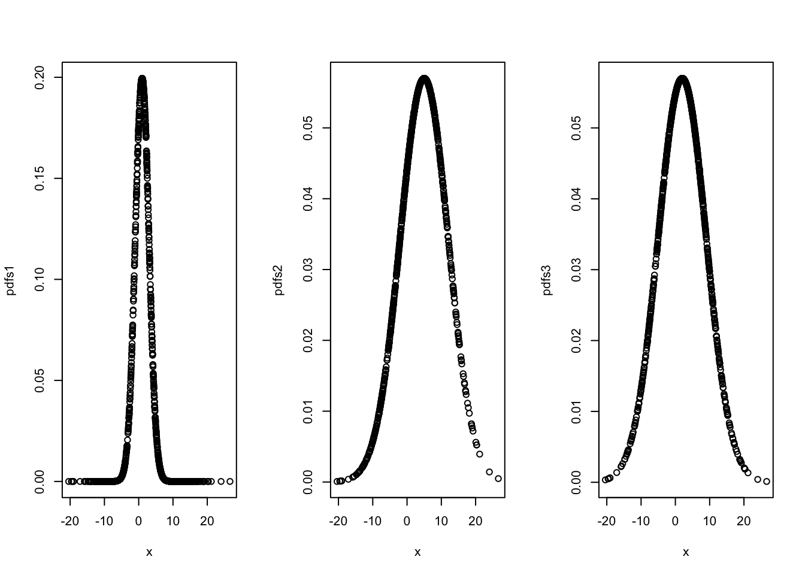
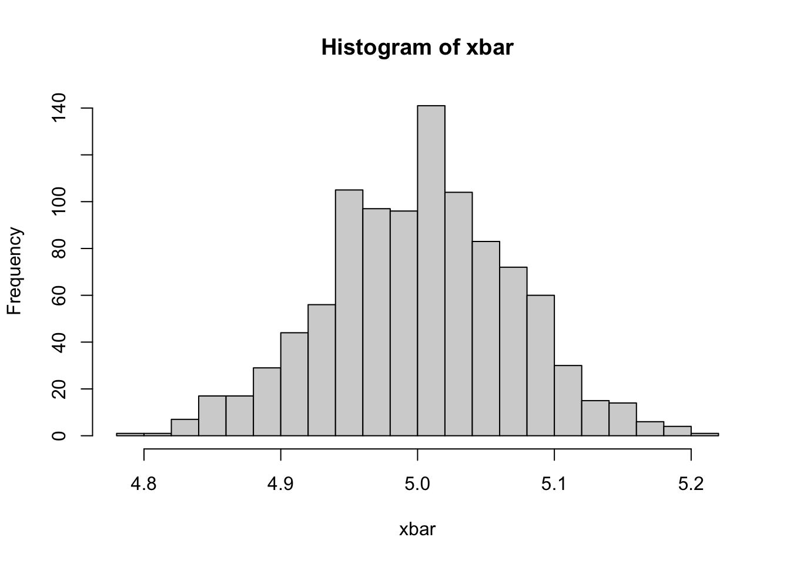
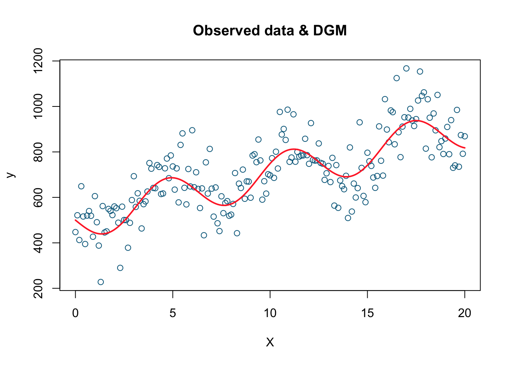

Chapter 2 Preliminaries
This chapter will review some basic concepts in statistics. For now, don’t stress about understanding the code chunks. As you study and practice R more (See R Labs at the end of the book), the codes here will become clearer.
2.1 Data and dataset types
R has a number of basic data types.
- Numeric : Also known as Double. The default type when dealing with numbers. 1,1.0,42.5
- Integer: 1L,2L,42L
- Complex: 4 + 2i
- Logical: Two possible values: TRUE and FALSE.
NAis also considered logical.
- Character: “a”,“Statistics”,“1plus2.”
Data can also be classified as numeric (what’s your age?) and categorical (Do you have a car?)
R also has a number of basic data structures. A data structure is either homogeneous (all elements are of the same data type) or heterogeneous (elements can be of more than one data type): You can think each data structure as data container where you data is stored. Here are the main “container” or data structures. Think it as Stata or Excel spread-sheets.
- Vector: 1 dimension (column OR row) and homogeneous. That is every element of the vector has to be the same type. Each vector can be thought of as a variable.
- Matrix: 2 dimensions (column AND row) and homogeneous. That is every element of the matrix has to be the same type.
- Data Frame: 2 dimensions (column AND row) and heterogeneous. That is every element of the data frame doesn’t have to be the same type. This is the main difference between a matrix and a data frame. Data frames are the most common data structure in any data analysis.
- List: 1 dimension and heterogeneous. Data can be multiple data structures.
- Array: 3+ dimensions and homogeneous.
In this book, we most frequently work with data frames.
When using data, there are three things we like to do:
- Look at the raw data.
- Understand the data. (What are the variables?)
- Visualize the data.
To look at the data, we have two useful commands: head() and str(), as seen in the examples below. head() allows us to see the first few data points in a dataset. str() allows us to see the structure of the data, including what data types are used. Using str() we can identify the mtcars dataset only includes numeric variables, and is structured in a data frame structure.
Cross-Sectional
library(datasets)
head(mtcars)## mpg cyl disp hp drat wt qsec vs am gear carb
## Mazda RX4 21.0 6 160 110 3.90 2.620 16.46 0 1 4 4
## Mazda RX4 Wag 21.0 6 160 110 3.90 2.875 17.02 0 1 4 4
## Datsun 710 22.8 4 108 93 3.85 2.320 18.61 1 1 4 1
## Hornet 4 Drive 21.4 6 258 110 3.08 3.215 19.44 1 0 3 1
## Hornet Sportabout 18.7 8 360 175 3.15 3.440 17.02 0 0 3 2
## Valiant 18.1 6 225 105 2.76 3.460 20.22 1 0 3 1str(mtcars)## 'data.frame': 32 obs. of 11 variables:
## $ mpg : num 21 21 22.8 21.4 18.7 18.1 14.3 24.4 22.8 19.2 ...
## $ cyl : num 6 6 4 6 8 6 8 4 4 6 ...
## $ disp: num 160 160 108 258 360 ...
## $ hp : num 110 110 93 110 175 105 245 62 95 123 ...
## $ drat: num 3.9 3.9 3.85 3.08 3.15 2.76 3.21 3.69 3.92 3.92 ...
## $ wt : num 2.62 2.88 2.32 3.21 3.44 ...
## $ qsec: num 16.5 17 18.6 19.4 17 ...
## $ vs : num 0 0 1 1 0 1 0 1 1 1 ...
## $ am : num 1 1 1 0 0 0 0 0 0 0 ...
## $ gear: num 4 4 4 3 3 3 3 4 4 4 ...
## $ carb: num 4 4 1 1 2 1 4 2 2 4 ...summary(mtcars)## mpg cyl disp hp
## Min. :10.40 Min. :4.000 Min. : 71.1 Min. : 52.0
## 1st Qu.:15.43 1st Qu.:4.000 1st Qu.:120.8 1st Qu.: 96.5
## Median :19.20 Median :6.000 Median :196.3 Median :123.0
## Mean :20.09 Mean :6.188 Mean :230.7 Mean :146.7
## 3rd Qu.:22.80 3rd Qu.:8.000 3rd Qu.:326.0 3rd Qu.:180.0
## Max. :33.90 Max. :8.000 Max. :472.0 Max. :335.0
## drat wt qsec vs
## Min. :2.760 Min. :1.513 Min. :14.50 Min. :0.0000
## 1st Qu.:3.080 1st Qu.:2.581 1st Qu.:16.89 1st Qu.:0.0000
## Median :3.695 Median :3.325 Median :17.71 Median :0.0000
## Mean :3.597 Mean :3.217 Mean :17.85 Mean :0.4375
## 3rd Qu.:3.920 3rd Qu.:3.610 3rd Qu.:18.90 3rd Qu.:1.0000
## Max. :4.930 Max. :5.424 Max. :22.90 Max. :1.0000
## am gear carb
## Min. :0.0000 Min. :3.000 Min. :1.000
## 1st Qu.:0.0000 1st Qu.:3.000 1st Qu.:2.000
## Median :0.0000 Median :4.000 Median :2.000
## Mean :0.4062 Mean :3.688 Mean :2.812
## 3rd Qu.:1.0000 3rd Qu.:4.000 3rd Qu.:4.000
## Max. :1.0000 Max. :5.000 Max. :8.000plot(mtcars[,c(1, 3, 4)])Time-series
head(airquality)## Ozone Solar.R Wind Temp Month Day
## 1 41 190 7.4 67 5 1
## 2 36 118 8.0 72 5 2
## 3 12 149 12.6 74 5 3
## 4 18 313 11.5 62 5 4
## 5 NA NA 14.3 56 5 5
## 6 28 NA 14.9 66 5 6str(airquality)## 'data.frame': 153 obs. of 6 variables:
## $ Ozone : int 41 36 12 18 NA 28 23 19 8 NA ...
## $ Solar.R: int 190 118 149 313 NA NA 299 99 19 194 ...
## $ Wind : num 7.4 8 12.6 11.5 14.3 14.9 8.6 13.8 20.1 8.6 ...
## $ Temp : int 67 72 74 62 56 66 65 59 61 69 ...
## $ Month : int 5 5 5 5 5 5 5 5 5 5 ...
## $ Day : int 1 2 3 4 5 6 7 8 9 10 ...summary(airquality)## Ozone Solar.R Wind Temp
## Min. : 1.00 Min. : 7.0 Min. : 1.700 Min. :56.00
## 1st Qu.: 18.00 1st Qu.:115.8 1st Qu.: 7.400 1st Qu.:72.00
## Median : 31.50 Median :205.0 Median : 9.700 Median :79.00
## Mean : 42.13 Mean :185.9 Mean : 9.958 Mean :77.88
## 3rd Qu.: 63.25 3rd Qu.:258.8 3rd Qu.:11.500 3rd Qu.:85.00
## Max. :168.00 Max. :334.0 Max. :20.700 Max. :97.00
## NA's :37 NA's :7
## Month Day
## Min. :5.000 Min. : 1.0
## 1st Qu.:6.000 1st Qu.: 8.0
## Median :7.000 Median :16.0
## Mean :6.993 Mean :15.8
## 3rd Qu.:8.000 3rd Qu.:23.0
## Max. :9.000 Max. :31.0
## airquality$date <- airquality$Month*10+airquality$Day
plot(airquality$date, airquality$Ozone)
This was just a simple time-series data presentation. In Part VIII, we will see more advance ways to handle time-series data. Moreover, dates and times can be handled by various packages/functions in R, like lubridate (see https://lubridate.tidyverse.org).
Here are some examples
library(lubridate)
# get current system date
Sys.Date() ## [1] "2022-09-04"# get current system time
Sys.time()## [1] "2022-09-04 07:21:52 ADT"#lubridate
now()## [1] "2022-09-04 07:21:52 ADT"dates <- c("2022-07-11", "2012-04-19", "2017-03-08")
# extract years from dates
year(dates)## [1] 2022 2012 2017# extract months from dates
month(dates)## [1] 7 4 3# extract days from dates
mday(dates)## [1] 11 19 8Panel
Panel data (also known as longitudinal data) is a dataset in which the behavior of multiple entities are observed across time. These entities could be states, companies, individuals, countries, etc. Note in the example below, two countries (“A”, and “B”) have variables observed over a time span between 1990 to 1999.
library(foreign)
panel <- read.dta("http://dss.princeton.edu/training/Panel101.dta")
panel[1:20,1:7]## country year y y_bin x1 x2 x3
## 1 A 1990 1342787840 1 0.27790365 -1.1079559 0.28255358
## 2 A 1991 -1899660544 0 0.32068470 -0.9487200 0.49253848
## 3 A 1992 -11234363 0 0.36346573 -0.7894840 0.70252335
## 4 A 1993 2645775360 1 0.24614404 -0.8855330 -0.09439092
## 5 A 1994 3008334848 1 0.42462304 -0.7297683 0.94613063
## 6 A 1995 3229574144 1 0.47721413 -0.7232460 1.02968037
## 7 A 1996 2756754176 1 0.49980500 -0.7815716 1.09228814
## 8 A 1997 2771810560 1 0.05162839 -0.7048455 1.41590083
## 9 A 1998 3397338880 1 0.36641079 -0.6983712 1.54872274
## 10 A 1999 39770336 1 0.39584252 -0.6431540 1.79419804
## 11 B 1990 -5934699520 0 -0.08184998 1.4251202 0.02342812
## 12 B 1991 -711623744 0 0.10616001 1.6496018 0.26036251
## 13 B 1992 -1933116160 0 0.35378519 1.5937191 -0.23439877
## 14 B 1993 3072741632 1 0.72677696 1.6917576 0.25622433
## 15 B 1994 3768078848 1 0.71939486 1.7414261 0.41174951
## 16 B 1995 2837581312 1 0.67154658 1.7083139 0.53584301
## 17 B 1996 577199360 1 0.81985730 1.5324961 -0.49964902
## 18 B 1997 1786851584 1 0.88016719 1.5021962 -0.57626772
## 19 B 1998 -149072048 0 0.70451611 1.4236463 -0.44841924
## 20 B 1999 -1174480128 0 0.23696731 1.4545859 -0.049363992.2 Plots
Often, a proper visualization can illuminate features of the data that can inform further analysis. We will look at four methods of visualizing data that we will use throughout the book:
- Histograms
- Barplots
- Boxplots
- Scatterplots
We can use the vehicle data, mpg inside the ggplot2 package. To begin, we can get a sense of the data by looking at the first few data points and some summary statistics.
library(ggplot2)
head(mpg, n=20L)## # A tibble: 20 × 11
## manufacturer model displ year cyl trans drv cty hwy fl class
## <chr> <chr> <dbl> <int> <int> <chr> <chr> <int> <int> <chr> <chr>
## 1 audi a4 1.8 1999 4 auto… f 18 29 p comp…
## 2 audi a4 1.8 1999 4 manu… f 21 29 p comp…
## 3 audi a4 2 2008 4 manu… f 20 31 p comp…
## 4 audi a4 2 2008 4 auto… f 21 30 p comp…
## 5 audi a4 2.8 1999 6 auto… f 16 26 p comp…
## 6 audi a4 2.8 1999 6 manu… f 18 26 p comp…
## 7 audi a4 3.1 2008 6 auto… f 18 27 p comp…
## 8 audi a4 quattro 1.8 1999 4 manu… 4 18 26 p comp…
## 9 audi a4 quattro 1.8 1999 4 auto… 4 16 25 p comp…
## 10 audi a4 quattro 2 2008 4 manu… 4 20 28 p comp…
## 11 audi a4 quattro 2 2008 4 auto… 4 19 27 p comp…
## 12 audi a4 quattro 2.8 1999 6 auto… 4 15 25 p comp…
## 13 audi a4 quattro 2.8 1999 6 manu… 4 17 25 p comp…
## 14 audi a4 quattro 3.1 2008 6 auto… 4 17 25 p comp…
## 15 audi a4 quattro 3.1 2008 6 manu… 4 15 25 p comp…
## 16 audi a6 quattro 2.8 1999 6 auto… 4 15 24 p mids…
## 17 audi a6 quattro 3.1 2008 6 auto… 4 17 25 p mids…
## 18 audi a6 quattro 4.2 2008 8 auto… 4 16 23 p mids…
## 19 chevrolet c1500 sub… 5.3 2008 8 auto… r 14 20 r suv
## 20 chevrolet c1500 sub… 5.3 2008 8 auto… r 11 15 e suvsummary(mpg)## manufacturer model displ year
## Length:234 Length:234 Min. :1.600 Min. :1999
## Class :character Class :character 1st Qu.:2.400 1st Qu.:1999
## Mode :character Mode :character Median :3.300 Median :2004
## Mean :3.472 Mean :2004
## 3rd Qu.:4.600 3rd Qu.:2008
## Max. :7.000 Max. :2008
## cyl trans drv cty
## Min. :4.000 Length:234 Length:234 Min. : 9.00
## 1st Qu.:4.000 Class :character Class :character 1st Qu.:14.00
## Median :6.000 Mode :character Mode :character Median :17.00
## Mean :5.889 Mean :16.86
## 3rd Qu.:8.000 3rd Qu.:19.00
## Max. :8.000 Max. :35.00
## hwy fl class
## Min. :12.00 Length:234 Length:234
## 1st Qu.:18.00 Class :character Class :character
## Median :24.00 Mode :character Mode :character
## Mean :23.44
## 3rd Qu.:27.00
## Max. :44.00When visualizing a single numerical variable, a histogram would be very handy:
hist(mpg$cty, xlab = "Miles Per Gallon (City)",
main = "Histogram of MPG (City)", breaks = 12,
col = "dodgerblue",cex.main=1, cex.lab=.75, cex.axis=0.75,
border = "darkorange")
Similar to a histogram, a barplot provides a visual summary of a categorical variable, or a numeric variable with a finite number of values, like a ranking from 1 to 10.
barplot(table(mpg$drv),
xlab = "Drivetrain (f = FWD, r = RWD, 4 = 4WD)", ylab = "Frequency",
main = "Drivetrains",
col = "dodgerblue",cex.main=1, cex.lab=.75, cex.axis=0.75,
border = "darkorange")
To visualize the relationship between a numerical and categorical variable, we will use a boxplot. In the mpg dataset, the drv variable takes a small, finite number of values. A car can only be front-wheel drive, 4-wheel drive, or rear-wheel drive.
boxplot(hwy ~ drv, data = mpg,
xlab = "Drivetrain (f = FWD, r = RWD, 4 = 4WD)",
ylab = "Miles Per Gallon (Highway)",
main = "MPG (Highway) vs Drivetrain",
pch = 20, cex =2,cex.main=1, cex.lab=.75, cex.axis=0.75,
col = "darkorange", border = "dodgerblue")Finally, to visualize the relationship between two numeric variables we will use a scatterplot.
plot(hwy ~ displ, data = mpg,
xlab = "Engine Displacement (in Liters)",
ylab = "Miles Per Gallon (Highway)",
main = "MPG (Highway) vs Engine Displacement",
pch = 20, cex = 2, cex.main=1, cex.lab=.75, cex.axis=0.75,
col = "dodgerblue")
While visualization is not enough to draw definitive conclusions, it can help us identify insights that can inform our deeper analysis. R is well-know for its graphical capabilities. The package ggplot is the main tool for more advance graphical representations that we will see later.
2.3 Probability Distributions with R
We often want to make probabilistic statements based on a distribution. Typically, we will want to know one of four things:
- The probability density function (pdf) at a particular value.
- The cumulative probability distribution (cdf) at a particular value.
- The quantile value corresponding to a particular probability.
- A random draw of values from a particular distribution.
The general naming structure of the relevant R functions is:
dnamecalculates density (pdf) at input \(x\).
pnamecalculates distribution (cdf) at input \(x\).
qnamecalculates the quantile at an input probability.
rnamegenerates a random draw from a particular distribution.
where name represents the name of the given distribution, like rnorm for a random draw from a normal distribution
For example, consider a random variable \(X\):
\[ X \sim N\left(\mu=2, \sigma^{2}=25\right) \]
To calculate the value of the pdf at \(x = 4\), that is, the height of the curve at \(x = 4\), use dnorm():
dnorm(x = 4, mean = 2, sd = 5)## [1] 0.07365403Note that R uses the standard deviation.
To calculate the value of the cdf at \(x = 4\), that is, \(P(X \leq{4})\), the probability that \(X\) is less than or equal to 4, use pnorm():
pnorm(q = 4, mean = 2, sd = 5)## [1] 0.6554217Or, to calculate the quantile for probability 0.975, use qnorm():
qnorm(p = 0.975, mean = 2, sd = 5)## [1] 11.79982Lastly, to generate a random sample of size n = 10, use rnorm()
rnorm(n = 10, mean = 2, sd = 5)## [1] 4.9897470 8.6316907 -0.1421002 4.5619919 -0.7607317 5.9018914
## [7] 4.7924889 11.3952540 4.2463310 0.5183168These functions exist for many other distributions such as: binom (Binomial), t (Student’s t), pois (Poisson), f (F), chisq (Chi-Squared).
2.4 Regressions
Regressions allow us to make estimations of the relationships between variables. Let’s consider a simple example of how the speed of a car affects its stopping distance. To examine this relationship, we will use the cars data set. We can start by getting some basic information about the data using str() and summary() again.
str(cars)## 'data.frame': 50 obs. of 2 variables:
## $ speed: num 4 4 7 7 8 9 10 10 10 11 ...
## $ dist : num 2 10 4 22 16 10 18 26 34 17 ...summary(cars)## speed dist
## Min. : 4.0 Min. : 2.00
## 1st Qu.:12.0 1st Qu.: 26.00
## Median :15.0 Median : 36.00
## Mean :15.4 Mean : 42.98
## 3rd Qu.:19.0 3rd Qu.: 56.00
## Max. :25.0 Max. :120.00Note that the variable names are quite long. To make them easier to work with, we can change them. We do this first by making a new data frame so we don’t alter the initial data when making changes. Then we apply new column names to it with the colnames() function. Our new names will be speed and dist.
carsDF <- cars
colnames(carsDF) <- c("speed", "dist")Finally, we can plot the speed and stopping distance in a scatterplot to get a sense of their relationship before proceeding with a formal regression.
plot(dist ~ speed, data = carsDF,
xlab = "Speed (in Miles Per Hour)",
ylab = "Stopping Distance (in Feet)",
main = "Stopping Distance vs Speed",
pch = 20, cex = 2,cex.main=1,
cex.lab=.75, cex.axis=0.75, col = "grey")
This visualization suggests there could be a relationship.
In this example, we are interested in using the predictor variable speed to predict and explain the response variable dist. We could express the relationship between \(X\) and \(Y\) using the following “Data Generating Process” (DGP):
\[\begin{equation} Y=f(X)+\epsilon \tag{2.1} \end{equation}\]
Here \(Y\) from 2.1 is the outcome determined by two parts: \(f(X)\), which is the deterministic part (a.k.a Data Generating Model - DGM) and \(\epsilon\) the random part that makes the outcome different for the same \(X\) for each observation. What’s \(f(X)\)? We will see later that this question is very important. For now, however, we assume that \(f(X)\) is linear as
\[\begin{equation} f(X)=\beta_{0}+\beta_{1} x_{i}. \tag{2.2} \end{equation}\]
And,
\[ \begin{array}{l}{\qquad Y_{i}=\beta_{0}+\beta_{1} x_{i}+\epsilon_{i}} \ {\text { where }} \ {\qquad \epsilon_{i} \sim N\left(0, \sigma^{2}\right)}\end{array} \] We could think that \(Y\) has different distribution for each value of \(X\). Hence, \(f(x)\) becomes the conditional mean of \(Y\) given \(X\).
\[ f(X) = \mathrm{E}\left[Y | X=x_{i}\right]=\beta_{0}+\beta_{1} x_{i}, \]
which means that \(\mathrm{E}\left[\epsilon | X=x_{i}\right]=0\). This model, which is also called as the population regression function (PRF), has three parameters to be estimated: \(\beta_{0}\), \(\beta_{1}\), and \(\sigma^{2}\), which are fixed but unknown constants. The coefficient \(\beta_{1}\) defines the relationship between \(X\) and \(Y\). Inferential statistics deals with estimating these population parameters using a sample drawn from the population. The statistical inference requires an estimator of a population parameter to be BLUE (Best Linear Unbiased Estimator) which is usually challenging to satisfy. A BLU estimator also requires several assumptions on PRF. These include that:
- The errors are independent (no serial correlation).
- The errors are identically distributed (constant variance of \(Y\) for different values of \(X\)) .
How do we actually find a line that represents the best relationship between \(X\) and \(Y\) best? We must find a line that minimizes the sum of squared “errors”. This is the Ordinary Least Squares (OLS) method:
\[\begin{equation} \underset{\beta_{0}, \beta_{1}}{\operatorname{argmin}} \sum_{i=1}^{n}\left(y_{i}-\left(\beta_{0}+\beta_{1} x_{i}\right)\right)^{2} \tag{2.3} \end{equation}\]
Using R, we can apply this method very simply with a bit of code.
model <- lm(dist ~ speed, data = carsDF)
b <- coef(model)
plot(carsDF, col = "blue", pch = 20)
abline(b, col = "red", lty = 5)Although we can see here the red line which minimizes the sum of squared error using the OLS method, we can try understand this problem mathematically.
2.4.1 Ordinary Least Squares (OLS)
The solution to this problem starts with defining the loss function, finding the first order conditions (F.O.C.) and solving them through normal equations.
\[\begin{equation} f\left(\beta_{0}, \beta_{1}\right)=\sum_{i=1}^{n}\left(y_{i}-\left(\beta_{0}+\beta_{1} x_{i}\right)\right)^{2}=\sum_{i=1}^{n}\left(y_{i}-\beta_{0}-\beta_{1} x_{i}\right)^{2} \tag{2.4} \end{equation}\]
\[ \begin{aligned} \frac{\partial f}{\partial \beta_{0}} &=-2 \sum_{i=1}^{n}\left(y_{i}-\beta_{0}-\beta_{1} x_{i}\right) \\ \frac{\partial f}{\partial \beta_{1}} &=-2 \sum_{i=1}^{n}\left(x_{i}\right)\left(y_{i}-\beta_{0}-\beta_{1} x_{i}\right) \end{aligned} \]
Here are 2 equations and 2 unknowns:
\[ \begin{array}{c}{\sum_{i=1}^{n}\left(y_{i}-\beta_{0}-\beta_{1} x_{i}\right)=0} \end{array} \]
\[ \begin{array}{c}{\sum_{i=1}^{n}\left(x_{i}\right)\left(y_{i}-\beta_{0}-\beta_{1} x_{i}\right)=0}\end{array} \]
Which can be expressed:
\[\begin{equation} \begin{array}{c}{n \beta_{0}+\beta_{1} \sum_{i=1}^{n} x_{i}=\sum_{i=1}^{n} y_{i}} \end{array} \tag{2.5} \end{equation}\]
\[\begin{equation} \begin{array}{c}{\beta_{0} \sum_{i=1}^{n} x_{i}+\beta_{1} \sum_{i=1}^{n} x_{i}^{2}=\sum_{i=1}^{n} x_{i} y_{i}}\end{array} \tag{2.6} \end{equation}\]
These functions (2.5 and 2.6) are also called normal equations. Solving them gives us:
\[\begin{equation} \beta_{1}=\frac{\text{cov}(Y,X)}{\text{var}(X)} \tag{2.7} \end{equation}\]
\[\begin{equation} \beta_{0}=\overline{y}-\beta_{1} \overline{x} \tag{2.8} \end{equation}\]
As this is simply a review, it won’t be covered in more depth here. Let’s use these variance/covariance values to get the parameters.
x <- carsDF$speed
y <- carsDF$dist
Sxy <- sum((x - mean(x)) * (y - mean(y)))
Sxx = sum((x - mean(x)) ^ 2) #Here to show, "=" would work as well
Syy <- sum((y - mean(y)) ^ 2)
beta_1 <- Sxy / Sxx
beta_0 <- mean(y) - beta_1 * mean(x)
c(beta_0, beta_1)## [1] -17.579095 3.932409Instead of coding each of the steps ourselves, we can also use the lm() function to achieve the same thing.
model <- lm(dist ~ speed, data = carsDF)
model##
## Call:
## lm(formula = dist ~ speed, data = carsDF)
##
## Coefficients:
## (Intercept) speed
## -17.579 3.932The slope parameter (\(\beta_1\)) tells us that the stopping distance is predicted to increase by \(3.93\) feet on average for an increase in speed of one mile per hour. The intercept parameter tells us that when the car’s speed is zero, it moves backwards. This indicates a modeling problem. One way to handle it to remove the intercept from the model that starts from the origin.
x <- carsDF$speed
y <- carsDF$dist
beta_1 <- sum(x*y) / sum(x^2)
beta_1## [1] 2.909132model <- lm(dist ~ speed - 1, data = carsDF)
model##
## Call:
## lm(formula = dist ~ speed - 1, data = carsDF)
##
## Coefficients:
## speed
## 2.909As we can see changing the model affects the prediction. Unfortunately the single-variable case is usually not a realistic model to capture the determination of the output. Let’s use a better dataset, mtcars:
head(mtcars)## mpg cyl disp hp drat wt qsec vs am gear carb
## Mazda RX4 21.0 6 160 110 3.90 2.620 16.46 0 1 4 4
## Mazda RX4 Wag 21.0 6 160 110 3.90 2.875 17.02 0 1 4 4
## Datsun 710 22.8 4 108 93 3.85 2.320 18.61 1 1 4 1
## Hornet 4 Drive 21.4 6 258 110 3.08 3.215 19.44 1 0 3 1
## Hornet Sportabout 18.7 8 360 175 3.15 3.440 17.02 0 0 3 2
## Valiant 18.1 6 225 105 2.76 3.460 20.22 1 0 3 1str(mtcars)## 'data.frame': 32 obs. of 11 variables:
## $ mpg : num 21 21 22.8 21.4 18.7 18.1 14.3 24.4 22.8 19.2 ...
## $ cyl : num 6 6 4 6 8 6 8 4 4 6 ...
## $ disp: num 160 160 108 258 360 ...
## $ hp : num 110 110 93 110 175 105 245 62 95 123 ...
## $ drat: num 3.9 3.9 3.85 3.08 3.15 2.76 3.21 3.69 3.92 3.92 ...
## $ wt : num 2.62 2.88 2.32 3.21 3.44 ...
## $ qsec: num 16.5 17 18.6 19.4 17 ...
## $ vs : num 0 0 1 1 0 1 0 1 1 1 ...
## $ am : num 1 1 1 0 0 0 0 0 0 0 ...
## $ gear: num 4 4 4 3 3 3 3 4 4 4 ...
## $ carb: num 4 4 1 1 2 1 4 2 2 4 ...We may want to model the fuel efficiency (mpg) of a car as a function of its weight (wt) and horse power (hp). We can do this using our method of normal equations.
\[ Y_{i}=\beta_{0}+\beta_{1} x_{i 1}+\beta_{2} x_{i 2}+\epsilon_{i}, \quad i=1,2, \ldots, n \]
\[ f\left(\beta_{0}, \beta_{1}, \beta_{2}\right)=\sum_{i=1}^{n}\left(y_{i}-\left(\beta_{0}+\beta_{1} x_{i 1}+\beta_{2} x_{i 2}\right)\right)^{2} \]
\[ \begin{aligned} \frac{\partial f}{\partial \beta_{0}} &=0 \\ \frac{\partial f}{\partial \beta_{1}} &=0 \\ \frac{\partial f}{\partial \beta_{2}} &=0 \end{aligned} \]
\[ \begin{array}{c}{n \beta_{0}+\beta_{1} \sum_{i=1}^{n} x_{i 1}+\beta_{2} \sum_{i=1}^{n} x_{i 2}=\sum_{i=1}^{n} y_{i}} \end{array} \] \[ \begin{array}{c}{\beta_{0} \sum_{i=1}^{n} x_{i 1}+\beta_{1} \sum_{i=1}^{n} x_{i 1}^{2}+\beta_{2} \sum_{i=1}^{n} x_{i 1} x_{i 2}=\sum_{i=1}^{n} x_{i 1} y_{i}} \end{array} \]
\[ \begin{array}{c}{\beta_{0} \sum_{i=1}^{n} x_{i 2}+\beta_{1} \sum_{i=1}^{n} x_{i 1} x_{i 2}+\beta_{2} \sum_{i=1}^{n} x_{i 2}^{2}=\sum_{i=1}^{n} x_{i 2} y_{i}}\end{array} \]
We now have three equations and three variables. While we could solve these ourselves, we can again let R solve them for us instead:
mpg_model = lm(mpg ~ wt + hp, data = mtcars)
coef(mpg_model)## (Intercept) wt hp
## 37.22727012 -3.87783074 -0.03177295The details of these applications can be reviewed in the lab sessions at the end of the book. When the number of explanatory variables is too large, we have to apply a matrix approach to solve it.
Up to this point we used OLS that finds the parameters minimizing the residual sum of squares (RSS - or the sum of squared errors). The other method is called Maximum likelihood Estimator or MLE.
2.4.2 Maximum Likelihood Estimators
To characterize the distribution of a continuous random variable, you can use the probability density function (pdf). Recall that pdf of a random variable \(X \sim N\left(\mu, \sigma^{2}\right)\) is given by:
\[
f_{x}\left(x ; \mu, \sigma^{2}\right)=\frac{1}{\sqrt{2 \pi \sigma^{2}}} \exp \left[-\frac{1}{2}\left(\frac{x_i-\mu}{\sigma}\right)^{2}\right]
\]
In R, you can use dnorm(x, mean, sd) to calculate the pdf of normal distribution.
- The argument \(x\) represent the location(s) at which to compute the pdf.
- The arguments \(\mu\) and \(\sigma\) represent the mean and standard deviation of the normal distribution, respectively.
For example, dnorm (0, mean=1, sd=2) computes the pdf at location 0 of \(N(1,4)\), normal distribution with mean 1 and variance 4. Let’s see examples of computing the pdf at 2 locations for.
dnorm(0, mean = 1, sd = 2)## [1] 0.1760327dnorm(1, mean = 1, sd = 2)## [1] 0.1994711In addition to computing the pdf at one location for a single normal distribution, dnorm also accepts vectors with more than one elements in all three arguments. For example, suppose that we have the following data, \(x\). We can now compute pdf values for each \(x\).
x <- seq(from=-10,to=+22,length.out=100)
pdfs <- dnorm(x, mean = 1, sd=2)
plot(x,pdfs)
We assume that our \(x\) is \(X \sim N\left(\mu = 1, \sigma^{2}=4\right)\). There are two assumption made here: (1) \(x\) is normally distributed (as you can see from the code it’s a wrong assumption, but ignore it for now); (2) the distribution is defined by mean = 1 and sd = 2. The main goal in defining the likelihood function is to find the distribution parameters (mean and sd in a normal distribution) that fit to the observed data best.
Let’s have an example. Pretend that we do not see and know the following data creation:
x <- rnorm(1000, 2, 7)Of course we can plot the data and calculate the parameters of its distribution (the mean and standard deviation of \(x\)). However, how can we do it with likelihood function?
pdfs1 <- dnorm(x, mean = 1, sd=2)
pdfs2 <- dnorm(x, mean = 5, sd=7)
pdfs3 <- dnorm(x, mean = 2, sd=7)
par(mfrow=c(1,3))
plot(x,pdfs1)
plot(x,pdfs2)
plot(x,pdfs2)
Which one is the best distribution, representing the true distribution of the data? This is the idea behind Maximum likelihood method. Let’s define the likelihood function for \(x\):
It seems reasonable that a good estimate of the unknown parameter \(\mu\) would be the value of \(\mu\) that maximizes the the likelihood (not the probability!) of getting the data we observed. The probability density (or mass) function of each \(x_{i}\) is \(f\left(x_{i} ; \mu, \sigma^2\right)\). Then, the joint probability density function of \(x_{1}, x_{2}, \cdots, x_{n}\), which we’ll call \(L(\mu, \sigma^2)\) is:
\[ L(\mu, \sigma^2)=P\left(X_{1}=x_{1}, X_{2}=x_{2}, \ldots, X_{n}=x_{n}\right)=f\left(x_{1} ; \mu,\sigma^2\right) \cdot f\left(x_{2} ; \mu,\sigma^2\right) \cdots f\left(x_{n} ; \mu, \sigma^2\right)=\prod_{i=1}^{n} f\left(x_{i} ; \mu, \sigma^2\right) \] The first equality is just the definition of the joint probability density function. The second equality comes from that fact that we have a random sample, \(x_i\), that are independent are independent. Hence, the likelihood function is:
\[ L(\mu, \sigma)=\sigma^{-n}(2 \pi)^{-n / 2} \exp \left[-\frac{1}{2 \sigma^{2}} \sum_{i=1}^{n}\left(x_{i}-\mu\right)^{2}\right] \]
and therefore the log of the likelihood function:
\[ \log L\left(\mu, \theta_{2}\right)=-\frac{n}{2} \log \sigma^{2}-\frac{n}{2} \log (2 \pi)-\frac{\sum\left(x_{i}-\mu\right)^{2}}{2 \sigma^{2}} \] Now, upon taking the partial derivative of the log likelihood with respect to \(\mu\) and setting to 0, we see that:
\[ \frac{\partial \log L\left(\theta_{1}, \theta_{2}\right)}{\partial \theta_{1}}=\frac{-\not 2 \sum\left(x_{i}-\mu\right)(-\not1)}{\not2 \sigma^{2}} \stackrel{\mathrm{SET}}{=} 0 \] and we get
\[ \sum x_{i}-n \mu=0 \] \[ \hat{\mu}=\frac{\sum x_{i}}{n}=\bar{x} \]
We can solve for \(sigma^2\) by the same way.
Now the regression. Since,
\[ Y_{i} | X_{i} \sim N\left(\beta_{0}+\beta_{1} x_{i}, \sigma^{2}\right) \]
\[ f_{y_{i}}\left(y_{i} ; x_{i}, \beta_{0}, \beta_{1}, \sigma^{2}\right)=\frac{1}{\sqrt{2 \pi \sigma^{2}}} \exp \left[-\frac{1}{2}\left(\frac{y_{i}-\left(\beta_{0}+\beta_{1} x_{i}\right)}{\sigma}\right)^{2}\right] \]
Given \(n\) data points \((x_i,y_i)\) we can write the likelihood as a function of the three parameters \(\beta_0\), \(\beta_1\), and \(\sigma^2\).
\[\begin{equation} L\left(\beta_{0}, \beta_{1}, \sigma^{2}\right)=\prod_{i=1}^{n} \frac{1}{\sqrt{2 \pi \sigma^{2}}} \exp \left[-\frac{1}{2}\left(\frac{y_{i}-\beta_{0}-\beta_{1} x_{i}}{\sigma}\right)^{2}\right] \tag{2.9} \end{equation}\]
Our goal is to find values of \(\beta_0\), \(\beta_1\), and \(\sigma^2\) which maximize Function 2.9. It is a straightforward multivariate calculus problem. First, let’s re-write 2.9 as follows:
\[\begin{equation} L\left(\beta_{0}, \beta_{1}, \sigma^{2}\right)=\left(\frac{1}{\sqrt{2 \pi \sigma^{2}}}\right)^{n} \exp \left[-\frac{1}{2 \sigma^{2}} \sum_{i=1}^{n}\left(y_{i}-\beta_{0}-\beta_{1} x_{i}\right)^{2}\right] \tag{2.10} \end{equation}\]
We can make 2.10 linear by taking the log of this function, which is called as the log-likelihood function.
\[\begin{equation} \log L\left(\beta_{0}, \beta_{1}, \sigma^{2}\right)=-\frac{n}{2} \log (2 \pi)-\frac{n}{2} \log \left(\sigma^{2}\right)-\frac{1}{2 \sigma^{2}} \sum_{i=1}^{n}\left(y_{i}-\beta_{0}-\beta_{1} x_{i}\right)^{2} \tag{2.11} \end{equation}\]
The rest would be simple calculus:
\[ \frac{\partial \log L(\beta_{0}, \beta_{1}, \sigma^{2})}{\partial \beta_{0}}=\frac{1}{\sigma^{2}} \sum_{i=1}^{n}\left(y_{i}-\beta_{0}-\beta_{1} x_{i}\right), \]
\[ \frac{\partial \log L\left(\beta_{0}, \beta_{1}, \sigma^{2}\right)}{\partial \beta_{1}}=\frac{1}{\sigma^{2}} \sum_{i=1}^{n}\left(x_{i}\right)\left(y_{i}-\beta_{0}-\beta_{1} x_{i}\right), \]
and,
\[ \frac{\partial \log L\left(\beta_{0}, \beta_{1}, \sigma^{2}\right)}{\partial \sigma^{2}}=-\frac{n}{2 \sigma^{2}}+\frac{1}{2\left(\sigma^{2}\right)^{2}} \sum_{i=1}^{n}\left(y_{i}-\beta_{0}-\beta_{1} x_{i}\right)^{2} \]
These first order conditions yield the following three equations with three unknown parameters:
\[ \begin{aligned} \sum_{i=1}^{n}\left(y_{i}-\beta_{0}-\beta_{1} x_{i}\right) &=0 \\ \sum_{i=1}^{n}\left(x_{i}\right)\left(y_{i}-\beta_{0}-\beta_{1} x_{i}\right) &=0 \\-\frac{n}{2 \sigma^{2}}+\frac{1}{2\left(\sigma^{2}\right)^{2}} \sum_{i=1}^{n}\left(y_{i}-\beta_{0}-\beta_{1} x_{i}\right)^{2} &=0 \end{aligned} \]
We call these estimates the maximum likelihood estimates. They are exactly the same as OLS parameters, except for the variance.
So we now have two different estimates of \(\sigma^{2}\).
\[ \begin{aligned} s_{e}^{2} &=\frac{1}{n-2} \sum_{i=1}^{n}\left(y_{i}-\hat{y}_{i}\right)^{2}=\frac{1}{n-2} \sum_{i=1}^{n} e_{i}^{2} \quad \text { Least Squares } \end{aligned} \]
\[ \begin{aligned} \hat{\sigma}^{2} &=\frac{1}{n} \sum_{i=1}^{n}\left(y_{i}-\hat{y}_{i}\right)^{2}=\frac{1}{n} \sum_{i=1}^{n} e_{i}^{2} \quad \text {MLE}\end{aligned} \]
2.4.3 Estimating MLE with R
How can we make estimations with MLE? It is good to look at a simple example. Suppose the observations \(X_1,X_2,...,X_n\) are from \(N(\mu,\sigma^{2})\) distribution (2 parameters: the mean and the variance). The likelihood function is:
\[\begin{equation} L(x)=\prod_{i=1}^{i=n} \frac{1}{\sqrt{2 \pi \sigma^{2}}} e^{-\frac{(x-\mu)^{2}}{2 \sigma^{2}}} \tag{2.12} \end{equation}\]
The objective is to find out the mean and the variance of the sample. Of course this a silly example: instead of using MLE to calculate them, we can use our middle-school algebra and find them right away. But the point here is to show how MLE works. And more importantly, we now have a different way to estimate the mean and the variance. The question here is, given the data, what parameters (mean and variance) would give us the maximum joint density. Hence, the likelihood function is a function of the parameter only, with the data held as a fixed constant, which gives us an idea of how well the data summarizes these parameters. Because we are interested in observing all the data points jointly, it can be calculated as a product of marginal densities of each observation assuming that observations are independent and identically distributed.
Here is an example:
#Let's create a sample of normal variables
set.seed(2019)
x <- rnorm(100)
# And the likelihood fo these x's is
prod(dnorm(x))## [1] 2.23626e-58What’s happening here? One issue with the MLE method is that, as probability densities are often smaller than 1, the value of \(L(x)\) would be very small. Or very high, if the variance is very high. This could be a worse problem for large samples and create a problem for computers in terms of storage and precision. The solution would be the log-likelihood:
\[\begin{equation} \log (\mathcal{L}(\mu, \sigma))=-\frac{n}{2} \log \left(2 \pi \sigma^{2}\right)-\frac{1}{2 \sigma^{2}} \sum_{i=1}^{n}\left(x_{i}-\mu\right)^{2} \tag{2.13} \end{equation}\]
In a more realistic case we can only observe a sample of some data points and assume how it is distributed. With this assumption we can have a log-likelihood function. Hence, if it’s a wrong assumption, our estimations will be wrong as well. The fact that we have to make assumptions about pdf’s will be very important issue when we cover nonparamateric estimations.
Let’s assume that we have 100 \(x\)’s with \(x\sim N\left(\mu, \sigma^{2}\right)\). We can now compute the derivatives of this log-likelihood and calculate the parameters. However, instead of this manual analytic optimization procedure, we can use R packages or algorithmic/numerical optimization methods. In fact, except for trivial models, the analytic methods cannot be applied to solve for the parameters. R has two packages optim() and nlm() that use algorithmic optimization methods, which we will see in the this book as a separate chapter. For these optimization methods, it really does not matter how complex or simple the function is, as they will treat it as a black box.
Here we can re-write function 2.13 :
\[\begin{equation} -\sum\left(\frac{\left(x_{i}-\mu\right)^{2}}{2 \sigma^{2}}+1 / 2 \log 2 \pi+1 / 2 \log \sigma^{2}\right), \tag{2.14} \end{equation}\]
Instead of finding the parameters that minimize this negative function, we can find the maximum of the negative of this function. We can omit the term \(-1/2\log2\pi\) and define the function to R as follows:
#Here is our function f(x)
fn <- function(prmt){
sum(0.5*(x - prmt[1])^2/prmt[2] + 0.5*log(prmt[2]))
}
#We have two packages nlm() and optim() to solve it
#We arbitrarily pick starting points for the parameters
sol1 <- nlm(fn, prmt <- c(1,2), hessian=TRUE)
sol2 <- optim(prmt <- c(0,1), fn, hessian=TRUE)
sol1## $minimum
## [1] 39.56555
##
## $estimate
## [1] -0.07333445 0.81164723
##
## $gradient
## [1] 5.478284e-06 4.384049e-06
##
## $hessian
## [,1] [,2]
## [1,] 123.206236680 -0.007519674
## [2,] -0.007519674 75.861573379
##
## $code
## [1] 1
##
## $iterations
## [1] 10sol2## $par
## [1] -0.07328781 0.81161672
##
## $value
## [1] 39.56555
##
## $counts
## function gradient
## 51 NA
##
## $convergence
## [1] 0
##
## $message
## NULL
##
## $hessian
## [,1] [,2]
## [1,] 123.210867601 -0.007012263
## [2,] -0.007012263 75.911070194Let’s check if these estimates are correct:
#mean
mean(x)## [1] -0.073334#sd
sum((x-mean(x))^2 )/length(x)## [1] 0.8116477This is nice. But we need to know little bit more about how optim() and nlp() works. More specifically, what’s an algorithmic optimization? We leave it to Algorithmic Optimization in Appendix.
2.5 BLUE
Statistical inference makes propositions about a population, using the sample data drawn from the population with some form of sampling. We use estimators on the sample to estimate the unknown population parameters. If we want to estimate the population mean of \(X\), \(\mu_X\), we use \(n^{-1}\Sigma x_i\) as an estimator on the sample. The choice of \(n^{-1}\Sigma x_i\) as an estimator seems commonsense, but why? What’s the criteria for a “good” estimator? The answer to this question is the key subject in econometrics and causal analysis. The requirement is that an estimator must be the best (B) linear (L) unbiased (U) estimator (E) of the population parameter for a proper statistical inference.
The Gauss–Markov theorem states that the \(\hat{\beta}_{0} \text { and } \hat{\beta}_{1}\) in the sample regression function (\(Y_{i}=\hat{\beta}_{0}+\hat{\beta}_{1} x_{i}+\hat{\epsilon}_{i}\)) are the best (B) linear (L) unbiased (U) estimators (E) of \(\beta_{0} \text { and } \beta_{1}\) provided that certain assumptions on the population regression function (\(Y_{i}=\beta_{0}+\beta_{1} x_{i}+\epsilon_{i}\)) are satisfied. We will now discuss U (unbiased) and B (best) as they relates to these estimators.
One measure of the “goodness” of an estimator is its unbiasedness, meaning that their expected value is the parameter being estimated. In the case of the regression estimates, we have:
\[ \begin{array}{l}{\mathrm{E}\left[\hat{\beta}_{0}\right]=\beta_{0}} \\ {\mathrm{E}\left[\hat{\beta}_{1}\right]=\beta_{1}}\end{array} \]
Recall the sampling distribution you’ve learned in statistics. The idea is simple. You have a population, but its characteristics are unknown to us, usually because it is too large. However, we can use a random sample to estimate the parameters of interest for the population. This generalization from the sample to the population requires the concept of sampling distribution.
Suppose we want to estimate the average age of the local population. You calculate the average age as 23 from a sample of 200 people randomly selected from the population. But, if you keep sampling 1000 times (1000 samples, 200 people in each), each sample will give you a different estimate. Which one should be used for the generalization (population)? None of them. We know that the average of all average ages calculated from 1000 samples will be the most correct average of the population, although only if the estimator is unbiased. In a simple average, the proof is easy. We will review a simulation now, which you will learn later (Section 2.8).
In this exercise we will create our own sampling distribution for \(\bar{x}\). The population \(x\) has the following probability distribution: \(N\left(0, \sigma^{2}\right)\). Pretend that we do not know this We will draw 1000 samples from this population. Each sample will have 200 \(x\)’s. Thus, we will calculate 1000 \(\bar{x}\)’s. The objective is to see if
\[ \mathbf E\left(\bar{x}\right)=\mu_x \]
This is a simple exercise for R that we will learn in our lab sessions at the back of the book.
There are multiple ways to do this simulation.
# population (1 million x's)
pop_x <- rnorm(1000000, mean = 5, sd = 1)
# Random Sampling
n <- 200 # number of x's in each sample
mcn <- 1000 # number of samples in the simulation
samp <- matrix(0, nrow = n, ncol = mcn) # a Container: matrix by 200 x 1000
for(i in 1: mcn){
samp[,i] <- sample(pop_x, n, replace = TRUE)
}
xbar <- colMeans(samp) # We calculate the column means
mu <- mean(xbar) # the mean of xbars
round(mu, 2)## [1] 5hist(xbar, breaks=20)
As we see, our estimator, \(\sum_{i=1}^{n}\left(x_{i}\right)/n\), is an unbiased estimator of the population mean. But is that enough?
Now, if we are happy with our unbiased estimator, how do we choose one estimator among all other unbiased estimators? How do we define the best estimator? The answer is simple: we choose the one with the minimum sampling variance. Why do we need the minimum variance? Remember more variance means higher differences in \(\hat{\beta}_{0} \text { and } \hat{\beta}_{1}\) from sample to sample. That means a very large confidence interval for the \(\mu_x\). Since we have only one sample in practice, the high sampling variance results in greater likelihood that we will get results further away from the mean of \(\bar{x}\), which is captured by the confidence interval.
First, note that it is very easy to create an estimator for \(\beta_{1}\) that has very low variance, but is not unbiased. For example, define \(\hat{\theta}_{B A D}=5\). Since \(\hat{\theta}_{B A D}\) is constant,
\[ \begin{array}{r}{\mathbf{Var}\left[\hat{\theta}_{B A D}\right]=0} \end{array} \]
However since, \(\mathbf{E}\left[\hat{\theta}_{B A D}\right]=5\), we can say that \(\hat{\theta}_{B A D}\) is not a good estimator even though it has the smallest possible variance. Hence two conditions, unbiasedness and minimum variance, have an order: we look for an estimator with the minimum variance in unbiased estimators.
Omitted Variable Bias (OVB)
One of the main reasons for a biased estimator in regression models is that the estimated model may “omit” some necessary variables. Here is a more realistic example from Stock and Watson (2015, p. 196): Suppose we want to make an analysis of the relationship between test score and class size. If we run this regression, we may face a major flaw: we ignore other determinants of the dependent variable (test score) that correlate with the regressor (class size). Remember that influences on the dependent variable which are not captured by the model are collected in the error term. As long as these omitted variables are correlated with the regressors (\(x\)) in the model, the conditional expectation on the error term becomes non-zero, \(\text{E}(\epsilon|x)\neq0\). This leads to an estimation bias, i.e., the mean of the OLS estimator’s sampling distribution is no longer equals the true mean. This issue is called omitted variable bias (OVB).
In the example of test score and class size, it is easy to come up with variables that may cause such a bias, if omitted from the model. In our case, a highly relevant variable could be the percentage of English learners in the school district: it is plausible that the ability to speak, read and write English is an important factor for successful learning. Therefore, students that are still learning English are likely to perform worse in tests than native speakers. Also, it is conceivable that the share of English learning students is bigger in school districts where class sizes are relatively large: think of poor urban districts where a lot of immigrants live. Hence the “true” model should look like equation 2.15:
\[\begin{equation} Test Score =\beta_{0}+\beta_{1}S T R+\beta_{2}PctEL+\epsilon_{i}, \tag{2.15} \end{equation}\]
where STR and PctEL are correlated, that is \(\rho_{str,~ pctel} \neq 0\).
We can omit PctEL in 2.15 and estimate it as
\[\begin{equation} Test Score =\hat{\beta}_{0}+\hat{\beta}_{1}STR+v_{i}. \tag{2.16} \end{equation}\]
Intuitively, as the omitted variable, PctEL, joins to the residual (\(v_i\)), \(\hat{\beta}_{1}\) will not reflect the true effect of changes in STR on the test score. We can formally see the result of this omission as follows:
\[ \hat{\beta}_{1}=\frac{\mathbf{Cov}\left(STR_{i},TestScore_{i}\right)}{\mathbf{Var}\left(STR_{i}\right)}=\frac{\sum_{i}\left(x_{i}-\bar{x}\right)\left(y_{i}-\bar{y}\right)}{\sum_{i}\left(x_{i}-\bar{x}\right)^{2}}=\frac{\sum_{i}\left(x_{i}-\bar{x}\right) y_{i}}{\sum_{i}\left(x_{i}-\bar{x}\right) x_{i}} \]
We can substitute \(y_i\) into the last term and simplify:
\[ \begin{aligned} \hat{\beta}_{1} &=\frac{\sum_{i}\left(x_{i}-\bar{x}\right)\left(\beta_{0}+\beta_{1} x_{i}+\beta_{2} z_{i}+\epsilon_{i}\right)}{\sum_{i}\left(x_{i}-\bar{x}\right) x_{i}} =\beta_{1}+\beta_{2} \frac{\sum_{i}\left(x_{i}-\bar{x}\right) z_{i}}{\sum_{i}\left(x_{i}-\bar{x}\right) x_{i}}+\frac{\sum_{i}\left(x_{i}-\bar{x}\right) \epsilon_{i}}{\sum_{i}\left(x_{i}-\bar{x}\right) x_{i}}, \end{aligned} \]
where \(z\) is \(PctEL\) (omitted variable), \(x\) is \(STR\), \(y\) is \(TestScore\). The second term is a result of our omission of variable PctEL (\(z\)). If we take the expectation of the last line:
\[ \begin{aligned} \mathbf{E}\left[\hat{\beta}_{1}\right] &=\mathbf{E}\left[\beta_{1}+\beta_{2} \frac{\sum_{i}\left(x_{i}-\bar{x}\right) z_{i}}{\sum_{i}\left(x_{i}-\bar{x}\right) x_{i}}+\frac{\sum_{i}\left(x_{i}-\bar{x}\right) \epsilon_{i}}{\sum_{i}\left(x_{i}-\bar{x}\right) x_{i}}\right] \\ &=\beta_{1}+\beta_{2} \mathbf{E}\left[\frac{\sum_{i}\left(x_{i}-\bar{x}\right) z_{i}}{\sum_{i}\left(x_{i}-\bar{x}\right) x_{i}}\right]+\mathbf{E}\left[\frac{\sum_{i}\left(x_{i}-\bar{x}\right) \epsilon_{i}}{\sum_{i}\left(x_{i}-\bar{x}\right) x_{i}}\right] \\ &=\beta_{1}+\beta_{2} [\text{cov}(x,z)/\text{var}(x)] \end{aligned} \]
What this means is that on average, our regression estimate is going to miss the true population parameter by the second term. Here is the OVB in action:
# load the AER package
library(AER)
# load the data set
data(CASchools)
str(CASchools)## 'data.frame': 420 obs. of 14 variables:
## $ district : chr "75119" "61499" "61549" "61457" ...
## $ school : chr "Sunol Glen Unified" "Manzanita Elementary" "Thermalito Union Elementary" "Golden Feather Union Elementary" ...
## $ county : Factor w/ 45 levels "Alameda","Butte",..: 1 2 2 2 2 6 29 11 6 25 ...
## $ grades : Factor w/ 2 levels "KK-06","KK-08": 2 2 2 2 2 2 2 2 2 1 ...
## $ students : num 195 240 1550 243 1335 ...
## $ teachers : num 10.9 11.1 82.9 14 71.5 ...
## $ calworks : num 0.51 15.42 55.03 36.48 33.11 ...
## $ lunch : num 2.04 47.92 76.32 77.05 78.43 ...
## $ computer : num 67 101 169 85 171 25 28 66 35 0 ...
## $ expenditure: num 6385 5099 5502 7102 5236 ...
## $ income : num 22.69 9.82 8.98 8.98 9.08 ...
## $ english : num 0 4.58 30 0 13.86 ...
## $ read : num 692 660 636 652 642 ...
## $ math : num 690 662 651 644 640 ...# define variables
CASchools$STR <- CASchools$students/CASchools$teachers
CASchools$score <- (CASchools$read + CASchools$math)/2Let us estimate both regression models and compare. Performing a multiple regression in R is straightforward. One can simply add additional variables to the right hand side of the formula argument of the function lm() by using their names and the + operator.
# estimate both regressions
model1 <- lm(score ~ STR, data = CASchools) # Underfitted model
model2 <- lm(score ~ STR + english, data = CASchools) # True model
model1##
## Call:
## lm(formula = score ~ STR, data = CASchools)
##
## Coefficients:
## (Intercept) STR
## 698.93 -2.28model2##
## Call:
## lm(formula = score ~ STR + english, data = CASchools)
##
## Coefficients:
## (Intercept) STR english
## 686.0322 -1.1013 -0.6498Is the magnitude of the bias, \(-1.1787 = -2.28 - (-1.1013)\), consistent with the formula, \(\beta_{2} [\text{cov}(x,z)/\text{var}(x)]\)?
cov(CASchools$STR, CASchools$english)/var(CASchools$STR)*model2$coefficients[3]## english
## -1.1785122.6 Modeling the data
When modeling data, there are a number of choices that need to be made.
What family of models will be considered? In linear regression, we specified models with parameters (\(\beta{j}\)) and fit the model by finding the best values of these parameters. This is a parametric approach. A non-parametric approach skips the step of specifying a model with parameters and are often described as more of an algorithm. Non-parametric models are often used in machine learning, which we will see in Part 2.
If we define a parametric model, what form of the model will be used for \(f(.)\) shown below?
\[ y =f\left(x_{1}, x_{2}, x_{3}, \ldots, x_{p}\right)+\epsilon \] Would it be linear or polynomial? If we are going to add non-linear terms, which variables would be selected with what degree of polynomial terms? Moreover, if there is no interaction between the predictors, one variable affects the response is the same for any values of the other predictors. Hence, we need to assume what the “true” population model (DGM) would be when searching for a model.
How will the model be fit? Although we have seen two of the most common techniques, OLS and MLE, there are more techniques in the literature.
Addressing these three questions are the fundamental steps in defining the relationships between variables and could be different in causal and predictive analyses.
2.7 Causal vs. Predictive Models
What is the purpose of fitting a model to data? Usually it is to accomplish one of two goals. We can use a model to explain the causal relationship between the response and the explanatory variables. Models can also be used to predict the response based on the predictors.
2.7.1 Causal Models
If the goal of a model is to explain the causal relationship between the response and one or more of the explanatory variables, we are looking for a model that is small and interpretable, but still fits the data well.
Suppose we would like to identify the factors that explain fuel efficiency (mpg - miles per galon) based on a car’s attributes (weight, year, hp, etc.). If you are a car manufacturer trying to engineer a fuel efficient vehicle, you would like to know both which variables are useful for explaining mpg and how those variables affect fuel efficiency. Don’t forget: you are interested in a small and interpretable model.
Note that linear models of any size are rather interpretable to begin with. Later, we will see more complicated models that may fit data better, but are much harder, if not impossible to interpret. Because of this, these models aren’t nearly as useful for explaining a relationship. This is another reason to always attempt a linear model.
To find small and interpretable models, we use inferential techniques with additional assumptions about the error terms in a model:
\[ \epsilon \sim N\left(0, \sigma^{2}\right) \]
This assumption states that the the error is normally distributed with some common variance. Also, this assumption states that the expected value of the error term is zero. This means that we should not have any OVB which, as we seen before, makes the expected error different than zero. In order words, the model has to be correctly specified without any omitted variable. These are the key to all of the inference we can make from a regression analysis.
One very important issue to understand a causal relationship is to distinguish two terms often used to describe a relationship between two variables: causation and correlation, both of which explain the relationship between \(Y\) and \(X\).
Correlation is often also referred to as association. One good example is the empirical relationship between ice cream sales and the crime rate in a given region. It has been shown that (Pearl and Mackenzie 2018) the correlation between these two measures are strong and positive. Just because these two variables are correlated does not necessarily mean that one causes the other (as people eat more ice cream, they commit more crime?). Perhaps there is a third variable that explains both! And it is known that very hot weather is that third missing factor that causes both ice cream sales and crime rates to go up. You can see many more absurd examples on the Spurious Correlations website.
Causation is distinct from correlation, because it reflects a relationship in which one variable directly effects another. Rather than just an association between variables that may be caused by a third hidden variable, causation implies a direct link between the two. Continuing the example from earlier, the very hot weather has a causal connection with both ice cream sales and crime, even though those two outcomes only share a correlation with each other.
2.7.2 Prediction Models
If the goal of a model is to predict the response, then the only consideration is how well the model fits the data. Hence we do not need to have distributional assumptions as stated above. More specifically, correlation and causation are not an issue here. If a predictor is correlated with the response, it would be useful for prediction. For example, in elementary school aged children their shoe size certainly doesn’t cause them to read at a higher level, however we could very easily use shoe size to make a prediction about a child’s reading ability. The larger their shoe size, the better they read because their shoe size reflects their age!
However, as we see later, a word of caution is needed when using a model to predict an outcome. Mud on the ground would predict that we had a rain. Or if a person has been hospitalized for the last 3 months, we can predict that the person was sick. These types of predictions are useless and called usually model or data leaking in machine learning.
What happens if we use a model built for causal analysis to predict the outcome? We will answer this question later. Keep this question in mind, because it will be a fundamental question to understand how machine learning or statistical learning would be different than a model that seeks a causation between \(Y\) and \(X\).
Since we are not performing inference, life is relatively easier with predictive models. Therefore, the extra assumptions about the errors are not needed. The only thing we must care about is how close the predicted outcomes are to the observed outcomes. Your results might be largely uninterpretable and useless for inference, but for prediction none of that matters. For a specified model, it will find the values of the parameters which will minimize the squared prediction error, which is most often is the following root-mean-squared-error:
\[ \text { RMSPE }=\sqrt{\frac{1}{n} \sum_{i=1}^{n}\left(y_{i}-\hat{y}_{i}\right)^{2}}, \]
where \(y_i\) are the actual values of the response for the “given data” and \(\hat{y}\) are the predicted values using the fitted model and the predictors from the data. While the choice between RMSPE and MSPE is arbitrary, RMSPE has the same unit as the response variable. Later, we will see more performance metrics in addition to MSPE.
An important issue in calculating MSPE is which \(y\)’s are supposed to be predicted. If we use the “same” \(y\)’s that we also use to calculate \(\hat{y}\)’s, MSPE will tend to be lower for a larger and more complex models. Since we use a sample, when we use a larger and the most complex model possible, the model will fit and predict that sample very well. However, it faces the “winner’s curse”: the model becomes too specific for that sample as it gets more complex. This is called overfitting.
When the model overfits, it will be less “generalizable” for another sample. Consequently, these overly specific models would have very poor predictions for “out-of-sample” data. This topic will be covered in the next section. But before that, lets have an example that shows an overfitting model:
# Simple OLS
model_ols <- lm(dist ~ speed, data = carsDF)
b <- coef(model_ols)
# A complex model
model_cmpx <- smooth.spline(carsDF$speed, carsDF$dist, df=19)
plot(carsDF, col = "blue", pch = 20)
abline(b, col = "red", lty = 5)
lines(model_cmpx,col='green', lwd=2)Let’s call two types of sample: seen (in-sample) and unseen (out-of-sample) data. The figure above shows two models fitted by using “seen” data, the data that we have on hand. In terms of fitting the model (minimizing MSPE), the “complex” (non-linear with green line) model is the best. The red dashed line is representing a simple linear model. If you use the “seen” data (sample you have) and the OLS criteria (minimizing MSE), the “complex” model should be chosen as a better model as it has the smallest MSPE.
But if we use these two models on “unseen” (out-of-sample) data to calculate MSE, which one will give us the minimum MSPE?
Suppose that you have two samples with the same variables. You give me the first sample and I don’t even know the existence of the second sample. You ask me to fit the model using the data you gave me. I did it by the rule of minimizing the RMSPE (or MSPE). And the complex model is the winner as it has the lower RMSPE. Now you gave me the second sample that I haven’t seen before. You then ask me to calculate RMSPE on this unseen data. Suppose I did. Would it be possible to have the following results (consider only the order of the numbers)?
| Type of Model | In-Sample RMSPE | Out-Sample RMSPE |
|---|---|---|
| Simple model | 1.71 | 1.45 |
| Complex model | 1.41 | 2.07 |
We will answer it in coming chapters in details but, for now, let use our first simulation exercise.
2.8 Simulation
Simulations are tools to see whether statistical arguments are true or not. In simulations, the data generating process (DGP) is known. We will know the form of the model as well as the value of each of the parameters. In particular, we will often control the distribution and parameters which define the randomness, or noise, in the data. One of the biggest strengths of R is its ability to carry out simulations using built-in functions for generating random samples from certain distributions. We’ll see many examples in the R labs (see Appendix).
Lets begin with an example. We are going to generate a sample of observations on \(Y\) from a model (a.k.a. DGM):
# Let create data
set.seed(1)
X <- seq(from = 0, to = 20, by = 0.1)
dgm <- 500 + 20*X - 90*sin(X) #This is our DGM
y = dgm + rnorm(length(X), mean = 10, sd = 100) #This is our DGP
data = data.frame(y,X)
plot(X, y, col='deepskyblue4',
xlab='X', main='Observed data & DGM')
lines(X, dgm, col='firebrick1', lwd=2)
This is the plot of our simulated data. The simulated data points are the blue dots while the red line is the DGM or the systematic part. Now we have the data (\(X\) and \(Y\)) and we also know the underlying data generating procedure (DGP) that produces these observations. Let’s pretend that we do not know DGP. Our job is to estimate DGM. We will use three alternative models to estimate the true DGM.
# linear model
model1 <- lm(y ~ X)
plot(X, y, col='deepskyblue4', xlab='X', main='Linear')
abline(lm(y ~ X, col = "blue"))# Polynomial model (there is an easier way!)
model2 <- lm(y ~ X + I(X^2) + I(X^3) + I(X^4) + I(X^5) + I(X^6) + I(X^7) + I(X^8)
+ I(X^9) + I(X^10) + I(X^11) + I(X^12) + I(X^13) + I(X^14)
+ I(X^15) + I(X^16) + I(X^17) + I(X^18), data=data)
plot(X, y, col= 'deepskyblue4', xlab='X', main='Polynomial')
lines(X, fitted(model2), col='firebrick1', lwd=2)#Nonparametric Model
model3 <- smooth.spline(X,y,df=200)
plot(X,y,col='deepskyblue4',xlab='X',main='Spline')
lines(model3,col='firebrick1', lwd=2)Which one do you think gives a better fit (the one with the smallest RMSPE)? I would pick the last one, the nonparametric spline model (we’ll see later what it is). Let’s calculate RMSPE for each.
# Let create a function for RMSPE
rmse = function(actual, predicted) {
sqrt(mean((actual - predicted) ^ 2))
}Now we have to keep predicted \(Y\)’s in separate vectors for those 3 models:
# Predicted values by the 3 models using the "seen" data
predicted1<- fitted(model1)
predicted2<- fitted(model2)
predicted3<- predict(model3, X)Now lets use our RMSPE function:
# RMSPE's calculated using the "seen" data
# Note that the actual y is the same for all models
rmse1_s <- rmse(predicted1, y)
rmse2_s <- rmse(predicted2, y)
rmse3_s <- rmse(predicted3$y, y)
seen <- c("RMSPE for model1 (linear)" = rmse1_s, "RMSPE for model2 (polynomial)" = rmse2_s,
"RMSPE for model3 (nonparametric)" = rmse3_s )
seen## RMSPE for model1 (linear) RMSPE for model2 (polynomial)
## 119.46405 88.87396
## RMSPE for model3 (nonparametric)
## 67.72450As expected, the the \(3^{rd}\) model has the minimum RMSPE. Now we have another sample that we haven’t had before:
# Here is the "unseen" using the same X's as in the "seen" data.
set.seed(2)
# So the only difference is the random error
y2 = dgm + rnorm(length(X), mean = 10, sd = 100)
plot(X, y2,col='deepskyblue4',xlab='X',main='The "Unseen" 2nd Sample')
rmse1_us <- rmse(predicted1, y2)
rmse2_us<- rmse(predicted2, y2)
rmse3_us <- rmse(predicted3$y, y2)
unseen <- c("RMSPE for model1 (linear)" = rmse1_us,
"RMSPE for model2 (polynomial)" = rmse2_us,
"RMSPE for model3 (nonparametric)" = rmse3_us)
unseen## RMSPE for model1 (linear) RMSPE for model2 (polynomial)
## 123.4378 109.9968
## RMSPE for model3 (nonparametric)
## 122.3018Let make a nice table:
table <- matrix(NA, 2, 3)
row.names(table) <- c("Seen-data", "Unseen-data")
colnames(table) <- c("Linear", "Polynomial", "Spline")
table[1,1] <- seen[1]
table[1,2] <- seen[2]
table[1,3] <- seen[3]
table[2,1] <- unseen[1]
table[2,2] <- unseen[2]
table[2,3] <- unseen[3]
table## Linear Polynomial Spline
## Seen-data 119.4640 88.87396 67.7245
## Unseen-data 123.4378 109.99681 122.3018The last model estimated by spline has the minimum RMSPE using the seen data. It fits very well when we use the seen data but it is not so good at predicting the outcomes in the unseen data. Even if our objective is to understand the causal relationship between \(Y\) and \(X\) by using the seen data to find a model, spline and polynomial models contain large numbers of variables. Therefore, they are complex models and their interpretations are very difficult. Moreover, a better fitting model using only the seen data could be worse in prediction. This is called overfitting, which is what we will see in the next chapter.